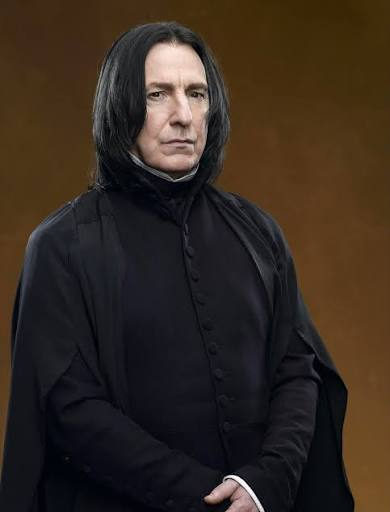

Adaptacja filmowa

Rickman nadał bohaterowi niezwykłą charyzmę, posługując się chłodnym, wyważonym głosem o ikonicznym tempie mówienia oraz oszczędną, pełną dystansu ekspresją. Pod maską surowego, bezwzględnego i budzącego strach nauczyciela eliksirów ukrył człowieka skrzywdzonego, tragicznego i zmuszonego do życia w ciągłym kłamstwie.
Adaptacja serialowa

Przejęcie tej ikonicznej roli po Alaninie Rickmanie otwiera zupełnie nowy rozdział w historii postaci, nadając jej świeży i unikalny wymiar. Essiedu, znany ze swoich znakomitych występów teatralnych (m.in. w produkcjach Royal Shakespeare Company), przynosi ze sobą ogromną głębię emocjonalną, wyrazistość i dramatyczny kunszt. Jego Snape ma szansę być postacią o wiele bardziej wielowarstwową.